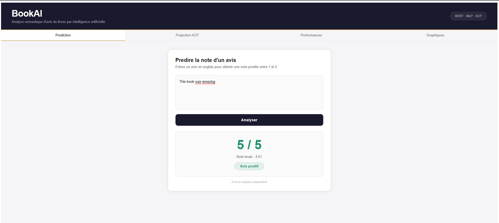

BookAI — Analyse Sémantique d'Avis de Livres par Intelligence Artificielle

🔍 AgrandirCadre du projet & Objectifs
Application web complète qui prédit la note (1 à 5 étoiles) d'un avis de livre en anglais grâce à l'intelligence artificielle. Pipeline complet : BERT pour l'encodage sémantique → MLP pour la prédiction → Dash pour l'interface interactive. Données : 50 000 avis Amazon équilibrés (10 000 par note) issus de Kaggle.
Étapes de réalisation
Extraction & encodage BERT
Téléchargement du dataset Kaggle (Books_rating.csv), sélection équilibrée de 50 000 avis (10 000 par note pour éviter le biais vers les 5 étoiles). Encodage de chaque avis en 384 dimensions via sentence-transformers (BERT). Génération des embeddings.npy, y.npy et de la projection ACP 2D (X_pca.npy).
Entraînement du modèle MLP
Entraînement d'un réseau de neurones MLP (Multi-Layer Perceptron) sur les embeddings BERT. Normalisation via StandardScaler, sauvegarde du modèle (mlp_model.pkl). Résultats : MAE = 1.12, RMSE = 1.44, R² = -0.04 en régression ; F1-Score = 0.76 en classification binaire (seuil 2.5 étoiles).
Interface Dash multi-onglets
Application Dash avec 4 onglets : Prediction (saisie d'un avis → note prédite + sentiment), Projection ACP (visualisation 2D des embeddings colorés par note), Performances (matrice de confusion, métriques), Graphiques (distribution des notes). Déploiement local sur http://127.0.0.1:8050.
Ce que j'en retire
BERT : la puissance de l'encodage sémantique
Le R² négatif en régression ne signifie pas que le modèle est mauvais — il montre que la prédiction d'une note précise (1 à 5) est une tâche intrinsèquement difficile car les avis de notes différentes se ressemblent sémantiquement en 2D. En classification binaire (positif/négatif), le F1 de 0.76 montre que le modèle distingue efficacement les avis positifs des négatifs dans 76% des cas.
💡 Ce que j'ai retenu
Ce projet m'a exposé à un pipeline ML complet en production : prétraitement → encodage → entraînement → déploiement. La partie la plus complexe n'était pas le modèle lui-même, mais l'équilibrage du dataset et la visualisation des résultats de manière compréhensible pour un utilisateur non-technique.
Ce que ça m'apporte en entreprise
Les modèles de NLP comme BERT sont de plus en plus déployés en entreprise pour l'analyse automatique d'avis clients, la classification de tickets support, la veille réputationnelle ou le scoring de textes. Savoir construire un pipeline BERT → MLP → interface Dash est une compétence de haut niveau dans les équipes Data Science.
Positionnement par rapport aux ACs
| Apprentissage Critique | Statut | Commentaires |
|---|---|---|
| AC24.01VCOD Comprendre le rôle fondamental de l'analyse des besoins et de l'existant dans un projet décisionnel |
A | Architecture du pipeline définie avant le code : identification des besoins (prédiction sémantique), des données disponibles (Kaggle) et des outils adaptés (BERT + MLP + Dash). |
| AC24.02VCOD Percevoir les enjeux de l'automatisation et de l'interopérabilité d'un ensemble de tâches |
A | Pipeline entièrement automatisé en 3 scripts indépendants : extraction.py → train_mlp.py → app.py. Interopérabilité garantie via les fichiers .npy et .pkl. |
| AC24.03VCOD Prendre conscience des différences entre outils pour choisir le plus adapté |
A | Choix justifié : BERT pour l'encodage sémantique (vs TF-IDF), MLP pour la prédiction non-linéaire, Dash pour la visualisation interactive (vs Streamlit ou Flask seul). |
| AC22.03 Comprendre l'intérêt des analyses multivariées pour synthétiser l'information |
A | Projection ACP 2D des embeddings BERT (384 dimensions → 2) pour visualiser la séparabilité des notes et expliquer les limites du modèle de régression. |